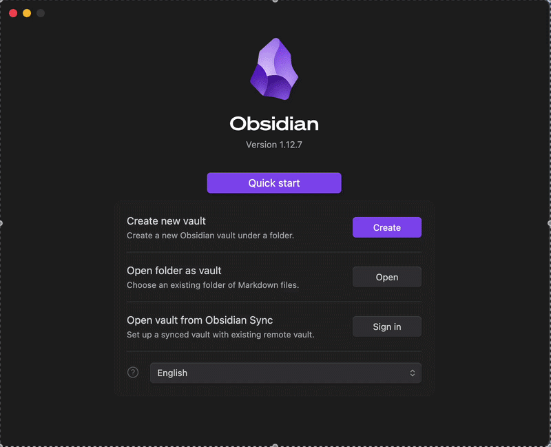
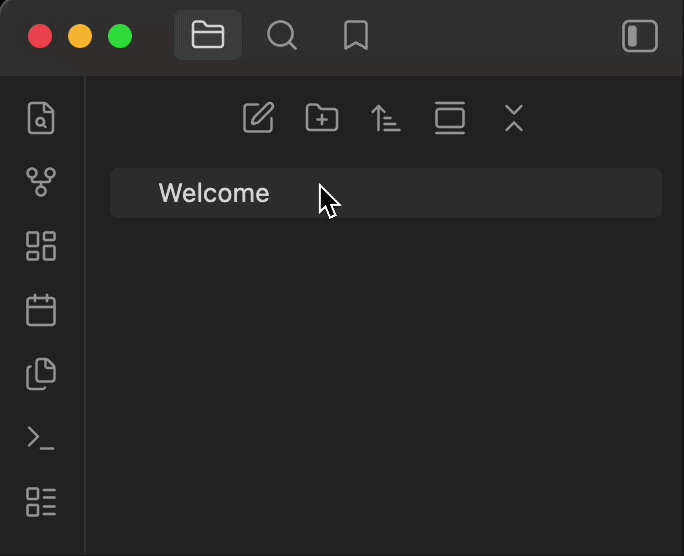
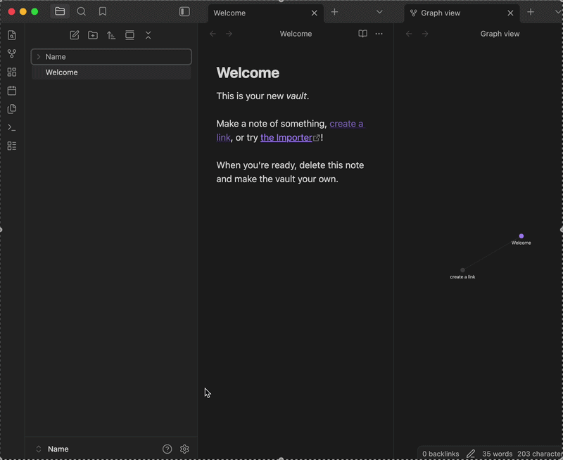
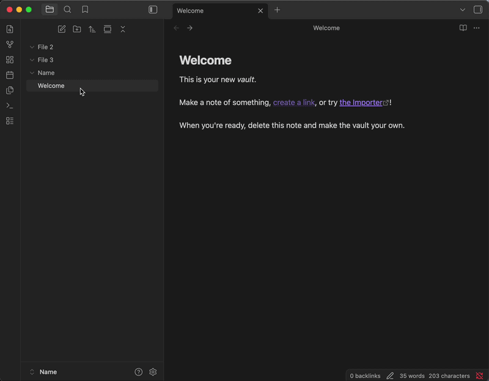
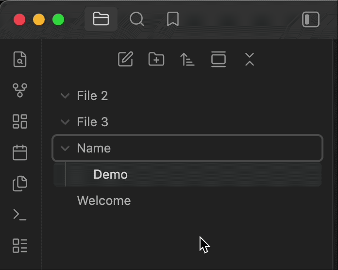
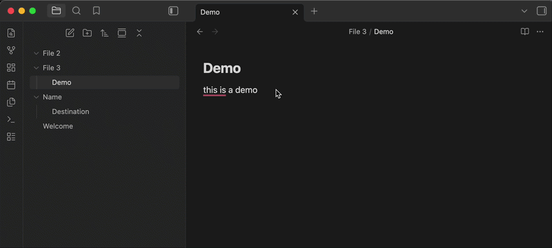
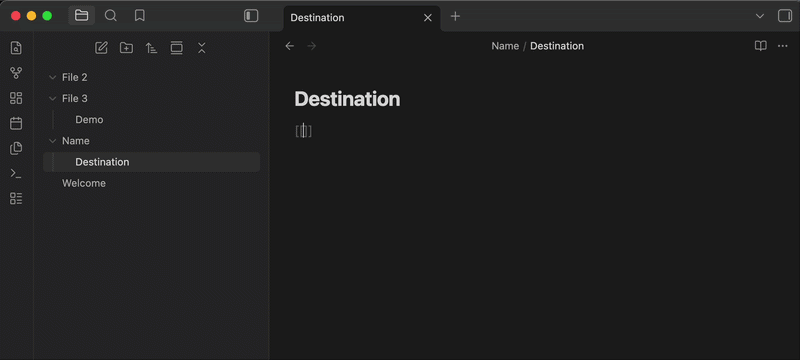
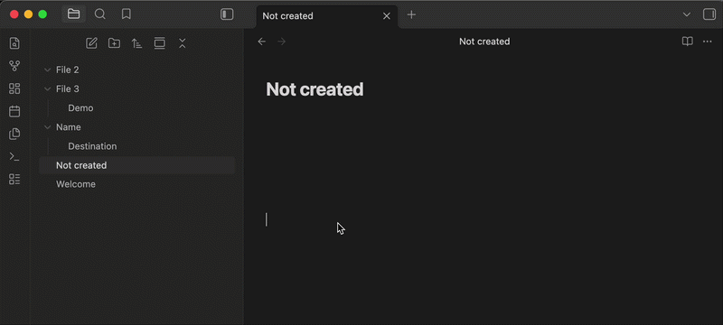
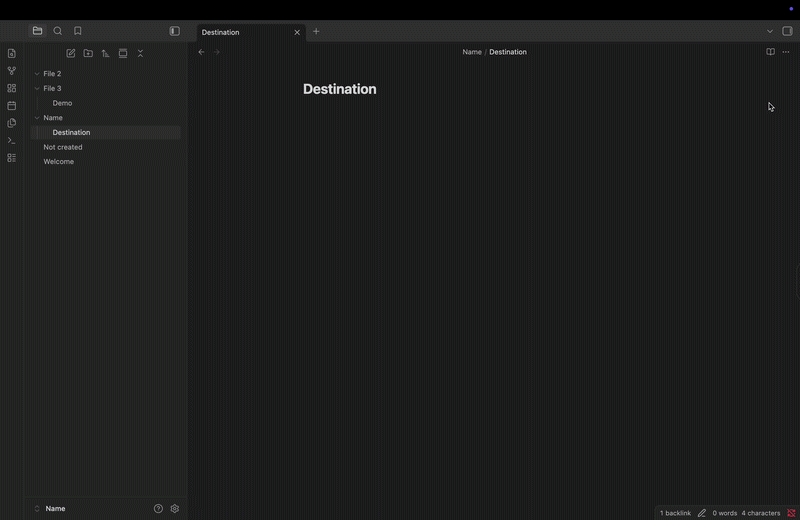

Task 1: How to set up Obsidian and link notes
One of the main features that Obsidian provides that most other apps or websites don't provide is the ability to link between different files and notes. This guide will show you how to set up Obsidian and link between different files.
Making a vault
The first thing you see right after you install Obsidian is the home page, and the first step is to create a vault.
- Click on the Create button to create a new vault.
- Create a name for your vault and find a location on your computer for where you want to store it.
- Click on Create.

Creating folders
Now that you have created a vault, you should create several folders to store your notes.
- Click on the folder icon with a plus sign in the middle, on the left of your screen.
- Click on it and give the folder a name of your choice.
- Repeat it three times.

Turning on Live Preview
Obsidian's Live Preview feature will allow you to see formatted text as you type it.
- Click on the cog icon on the bottom left of your screen right next to the vault's name.
- Click on Editor and make sure default editing mode is on Live Preview.

Writing your first note
- Right-click on any one of your folders and click New note.
- Give it a title of your choice.
- Write anything.

Moving notes
- Drag the note that you just created and move it to another folder.

Linking notes
- Open a note and type two opening square brackets [[. Obsidian will show a list of existing notes that you can link to.
- In the square brackets, type in the name of the note you created in the previous step and press enter.

Note
Now when you click on the link, it will open the note that you selected.
Creating a new note from a link
In Obsidian you don't need to create a new note to link to it; you can create a link to the desired name and it will be automatically created.
- Inside an existing note, type [[desired name]] and press enter. Obsidian will then instantly create a new note.

Warning
Make sure the name you put does not already exist.
Adding a tag to a note
Another great feature in Obsidian is the search function. By grouping notes with tags, you can search the tag and all the notes that include that tag will show up. This is a great alternative if you don't want to link between the notes.
- At the bottom or top of the note add a # followed by any relevant word of your choice, for example: #work

Using back links
Imagine you have been using Obsidian for quite a while now, and have forgotten which notes link to which. With back links you can rediscover connections you might have forgotten about.
- Open any note and look at the top right, click on the 3-dot icon.
- Select Back links in document from the menu.

Note
If there are any back links, it should show a list of other notes that are linked to the one you're reading.
Conclusion
You should now know how to set up your Obsidian and link notes, including how to add tags and use back links to rediscover connections between notes.